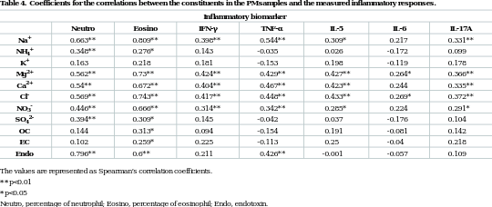

<?xml version="1.0" encoding="UTF-8"?>
<table title="table4" id="table4" class="tabcontent" xmlns="http://www.w3.org/1999/xhtml">
 <tr>
  <td>
   
   <p>corpus-oa-validation/10.1371_journal.pone.0173158/tables/table4/table.svg.png</p>
  </td>
  <td>
   <table class="table">
    <caption/>
    <tr>
     <th class="cell">The values are represented as Spearman’s correlation coefficients. * * p&lt;0.01 * p&lt;0.05 Neutro, percentage of neutrophil; Eosino, percentage of eosinophil; Endo, endotoxin. </th>
    </tr>
   </table>
   <p>corpus-oa-validation/10.1371_journal.pone.0173158/tables/table4/table.svg.html</p>
  </td>
 </tr>
</table>
